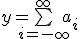

Wiki-страницы позволяют вставлять формулы в формате Tex.
Для отрисовки формул используется программа mimeTeX. В версии OutWiker под Windows mimeTex прилагается и расположена в директории tools\mimetex, под Linux mimeTeX необходимо установить самостоятельно. В deb-пакете OutWiker'а mimeTeX упомянут в списке зависимостей.
Формулы располагаются между скобками {$ ... $}. Например, команда {$ y = \bigsum_{i=-\infty}^{\infty}a_i $} выведет следующую формулу:
Также можно использовать команду \fontN, где N (от 1 до 5) условно обозначает размер шрифта, чем N больше, тем шрифт крупнее.
| Формула | Результат |
| {$ y = \bigsum_{i=-\infty}^{\infty}a_i $}
Размер по умолчанию (\font3) | |
| {$ \font1 y = \bigsum_{i=-\infty}^{\infty}a_i $} |  |
| {$ \font2 y = \bigsum_{i=-\infty}^{\infty}a_i $} |  |
| {$ \font3 y = \bigsum_{i=-\infty}^{\infty}a_i $} |  |
| {$ \font4 y = \bigsum_{i=-\infty}^{\infty}a_i $} |  |
| {$ \font5 y = \bigsum_{i=-\infty}^{\infty}a_i $} |  |